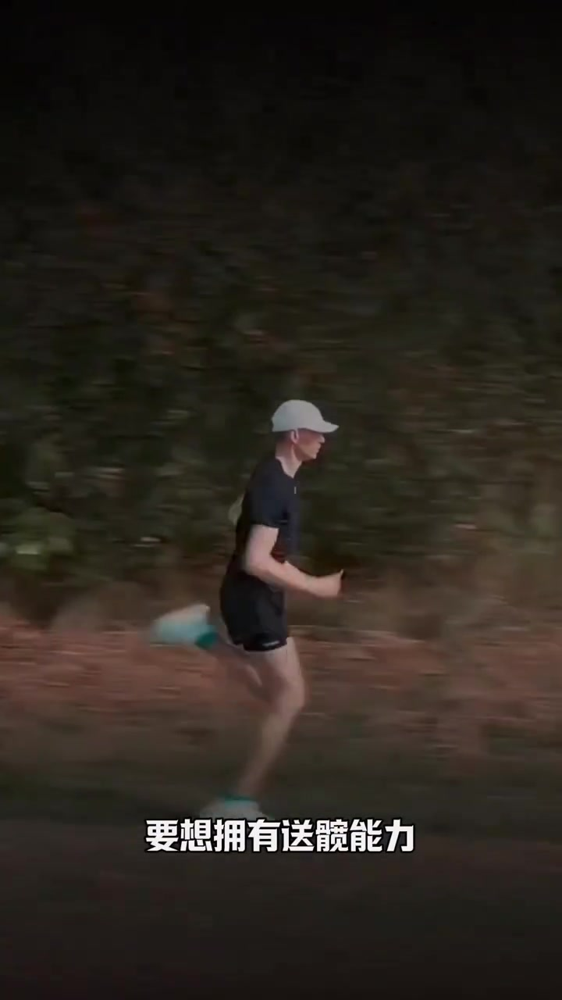
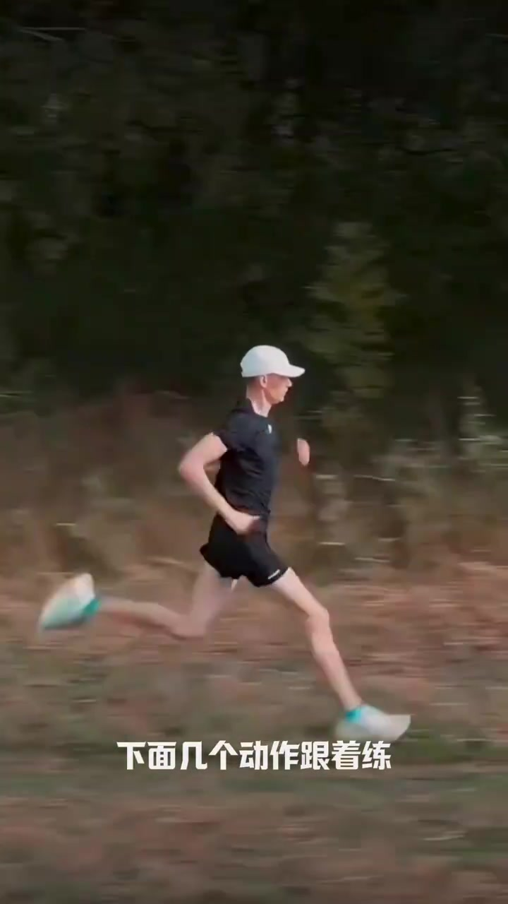
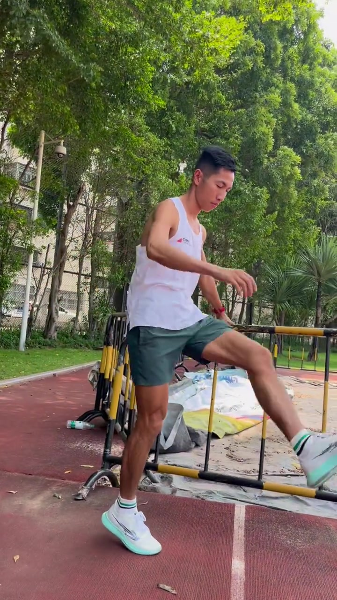
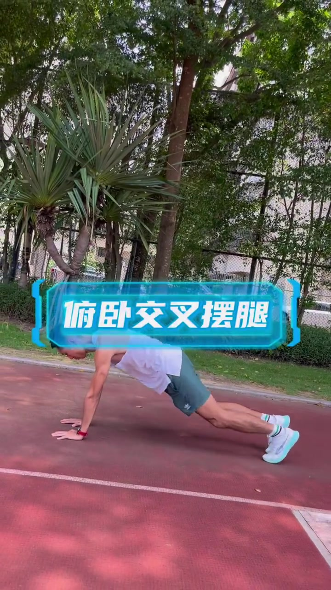
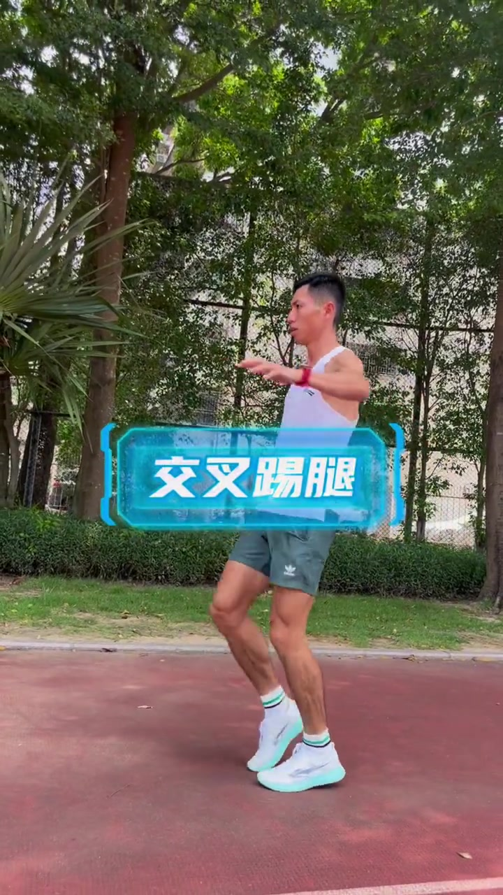
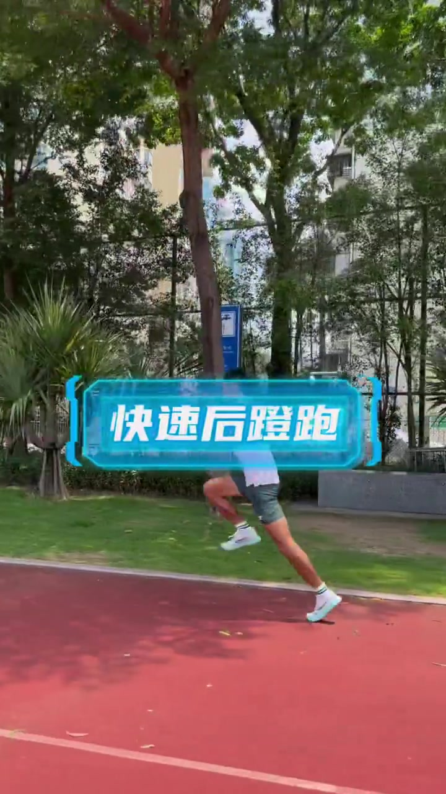
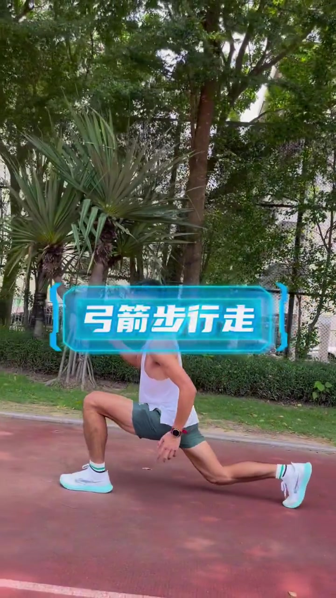

开场背景
这条笔记标题很会钓人——「这大步流星的感觉谁懂呀」。画面里的人不是在讲抽象理论，而是把「大步流星」落到一组可跟练的动作上。作者账号显示为标老师跑步；笔记正文把主题钉死在「送髋」：它既是专业术语，也是专业动作，体现髋关节灵活性、臀部驱动力和核心稳定性。
口播方面：Whisper 在配乐干扰下只幻觉出无关字幕水印，按工作流保留为 [听不清]。下文时间线以画面大字、动作示范与笔记文案为准，不臆造口播句子。
CHAPTER 01 · 00:00–00:05
夜跑钩子：先把「送髋能力」喊出来
视频一开场是夜色里的跑步侧影，画面底部白字直接给出命题：「要想拥有送髋能力」。紧接着第二行提示变成跟练指令：「下面几个动作跟着练」。节奏很短，几乎不给观众犹豫——目标是送髋，方法是后面一串动作。


CHAPTER 02 · 00:05–00:17
正摆腿：扶栏杆，左右脚各 20 次
切到白天塑胶场地，作者身穿白色背心，一手扶黄黑相间的金属栏杆，做大幅度正摆腿。蓝色框字幕点名动作：「正摆腿」；黄色大字补上剂量：「左右脚各20次」。这一段是整条视频最像「热身/激活」的部分——先把髋关节活动开。

CHAPTER 03 · 00:17–00:25
俯卧交叉摆腿：把髋部活动搬到地面
约 17 秒切到地面动作。作者呈俯撑姿态，一条腿做交叉摆动，蓝色框标注「俯卧交叉摆腿」。和站立正摆腿相比，这一段更强调躯干稳定——手脚撑地时，核心必须先稳住，才能让髋部自如交叉摆动。画面没有再刷次数，但仍延续「跟着练」的示范节奏。

CHAPTER 04 · 00:25–00:30
交叉踢腿：站立位再加一次交叉刺激
站起来后进入「交叉踢腿」。动作看起来像在空中做左右交叉的踢摆，字幕再次给出「左右脚各20次」。和正摆腿同剂量，说明作者把「站立交叉」和「正向摆腿」都当作可计数的激活项，而不是一次性展示。

CHAPTER 05 · 00:30–00:35
快速后蹬跑：把激活接回「跑」
真正开始「跑」的感觉出现在这一段。蓝色框写着「快速后蹬跑」，黄色字补距离：「后蹬距离20米」。镜头里能看到明显的后腿蹬伸与身体前倾——这正是标题里「大步流星」最直观的画面：不是抬腿好看，而是后蹬把人送出去。

CHAPTER 06 · 00:35–00:41
弓箭步行走：用大步把髋前送固定下来
收尾是「弓箭步行走」：深弓步、步幅拉开、上身相对直立地向前走。它不像冲刺那么快，却把「髋前送 + 步幅」放慢给观众看。41 秒整段到此结束——从夜跑口号，到五项跟练，再到把大步感接回跑姿，结构非常紧。

若只看标题，容易以为这是「炫步幅」；结合笔记文案，作者真正想强调的是：没有髋活、臀力和核心稳定，送髋（以及大步流星的体感）很难做出来。动作清单是入口，能力条件才是底盘。